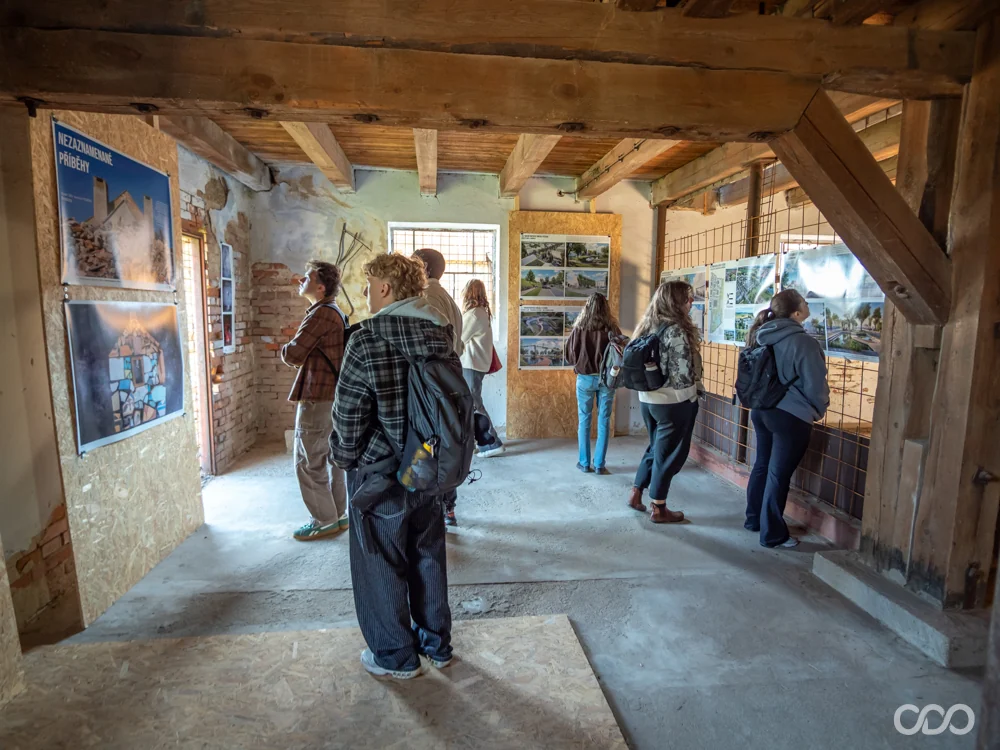

Materiálová banka v mobilu

Studenti krajinářské architektury ZF MENDELU mapovali v areálu materiály vhodné k dalšímu využití. Pro terénní audit vznikla mobilní aplikace, která umožňuje zaznamenávat nálezy přímo na místě.
Celý článek na atelierdohnalovi.cz